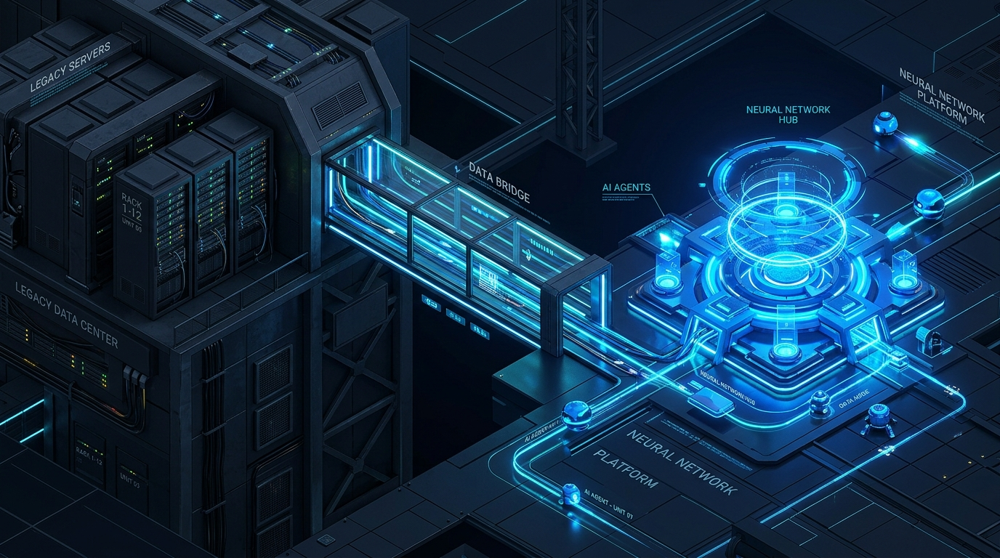

Resiliencia Artificial es la firma consultora experta en soluciones AI-First. Construimos el puente definitivo entre su infraestructura heredada y la inteligencia autónoma.
Implementar IA sin cimientos genera alucinaciones, brechas y proyectos estancados.
Curaduría de datos (*AI-Ready Data*), harness de TI e integración multi-cloud.

Infraestructura Heredada ➔ Curaduría ➔ Inteligencia Autónoma
Resiliencia Artificial encabeza la estrategia, gobernanza y consultoría directiva, asociándose con **InfoGlobalTech (IGT)** y **LAB-AI** para entregar soluciones End-to-End.
Firma de consultoría experta en estrategia AI-First, arquitectura de gobernanza, auditoría de madurez y aceleración del ROI para corporativos y PYMEs.
+15 años de trayectoria en modernización de datos, arquitecturas enterprise cloud multi-proveedor (AWS, GCP, Azure) y operaciones de misión crítica en 19 países.
La mejor fábrica de software de IA. Desarrollo de LLMs propios, agentes autónomos y aceleración del ciclo de adopción del prototipo a producción.
6 pilares fundamentales para acompañar a su empresa en cada fase de la adopción tecnológica.
Alineación ejecutiva C-Level, auditorías de madurez digital y hojas de ruta a 12 meses priorizando casos de uso de alto impacto operativo.
Asistentes conversacionales y agentes autónomos multi-tarea integrados a sus flujos diarios de trabajo para maximizar productividad.
Capacitación ejecutiva y técnica para preparar a su equipo, reducir la resistencia al cambio e inculcar una cultura orientada a la IA.
Mantenimiento evolutivo 24/7, monitoreo continuo de infraestructura y fábrica de software ágil (.NET, Python, RPA, Cloud) a medida.
Pruebas de regresión automatizadas, prevención de alucinaciones, guardrails de ejecución y observabilidad de modelos en producción.
Arquitectura multi-cloud resiliente, pipelines de datos de alto rendimiento e infraestructura parametrizada como código (IaC).
4 Fases interconectadas sin silos ni intermediarios múltiples.
Entendemos su negocio, procesos y sistemas legacy antes de proponer cualquier solución. Evaluamos brechas de datos y establecemos la estrategia directiva (CXO Advisory).
Resultados concretos comprobados en Retail, Banca, Telecomunicaciones y Sector Público.
Desafío: 30 a 48 ejecutivos procesando pedidos manualmente (20-30 min/orden) generando costos elevados y errores.
Solución: Solución RPA con UiPath, .NET Core y MSSQL operando 24/7/365.
Desafío: Historial transaccional de 8 años fragmentado. Los informes IFRS9 demoraban semanas.
Solución: ETL Framework escalable en Azure Data Factory, Databricks y SQL DW.
Desafío: Acelerar lanzamientos de e-commerce previniendo fallas en Cyber Monday / Black Friday.
Solución: Marco de automatización híbrido (Test Wizards) integrado a las pruebas de desarrolladores.
Desafío: Tiempos de aprobación de hasta 5 días con riesgo de error en solicitudes de crédito.
Solución: UiPath + Document Understanding para extracción automatizada en CRM.
Desafío: Inestabilidad en T24, parches ad-hoc y cierres EOD lentos en Jamaica, Trinidad y Rep. Dominicana.
Solución: Reestructuración de gestión de releases T24, arquitectura de APIs y mapeo OOTB.
Desafío: Despliegue simultáneo de Prepago/Pospago sobre arquitecturas complejas de facturación.
Solución: Blueprints TOGAF/eTOM, modelo global on-shore/off-shore y pipelines ETL.
Desafío: Actualizar infraestructura de salud digital en producción sin inactividad.
Solución: Infrastructure as Code (IaC) con AWS CloudFormation y AWS Config.
Desafío: Respuesta lenta y tickets acumulados por crecimiento en volumen de consultas.
Solución: Bot conversacional impulsado por Azure OpenAI (GPT) y Cognitive Services.
Desafío: Sobrecarga en trámites de licencias comerciales y retrasos en atención presencial.
Solución: Asistente GenAI con Azure Bot Services y Dialogflow conectado a bases municipales.
Estima los ahorros potenciales al automatizar tus datos con Resiliencia Artificial.
Agende su Data Discovery Session o solicite una consultoría estratégica para evaluar sus datos.
Chief Executive Officer — Resiliencia Artificial
Respuesta garantizada en menos de 24 horas laborables.